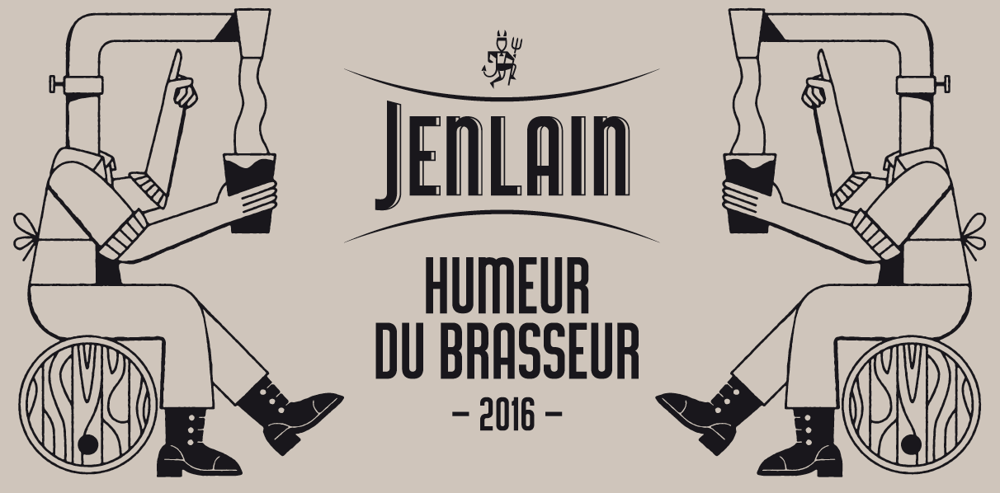
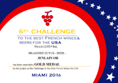
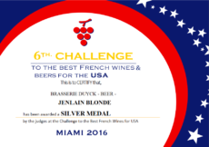

Jenlain!
Bienvenue sur le site fan de la Jenlain ! Ici rien ne presse, que de la bière pas de vin, donc relâche la pression et prends en une, t'es plutôt blonde ou brune ?
Bienvenue à Jenlain
"Avec la coopération de Guillaume Grac & William Kies"
Actualité
Humeur du brasseur
La brasserie Duyck vous propose pour la première année l’Humeur du Brasseur. Cette bière de garde en édition limitée est un hommage au travail du brasseur car avant d’être une boisson, la bière est d’abord une affaire d’envie, d’inspiration et d’imaginaire. Le millésime 2016 a donné naissance à « l’Ambrée Intense ». Cette création éphémère, à la fois forte en saveurs et délicate en bouche, séduit par ses arômes marqués de malts torréfiés et sa subtile amertume. Le design est lui aussi en édition limitée, fruit d’une collaboration artistique, il fait écho à la recette fraîchement élaborée et nous raconte ici en illustrations ce qui lie le maître brasseur à sa création.
Amertume : 25 IBU / Houblons : Magnum, Aramis, Brewersgold / Couleur : 6 / Alc: 6% vol
Evènement

Concours des Meilleures Bières Françaises aux Usa
Lors de la 6ème édition du Concours des Meilleures Bières Françaises aux USA, le jury a récompensé le savoir-faire de la Brasserie Duyck. Plusieurs Jenlain se sont distinguées : Médaille d’or pour Jenlain Or et Médailles d’argent pour Jenlain Ambrée et Blonde.
 